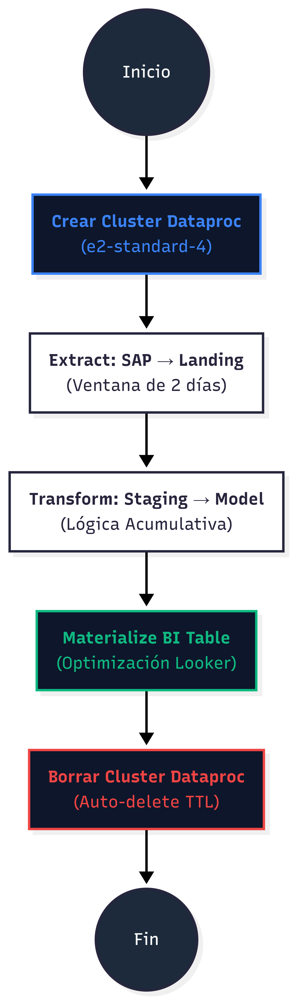

Real-Time Sales Pipeline
Arquitectura ELT de alta disponibilidad escalada para una Empresa Líder en Retail, permitiendo el monitoreo global de transacciones POS con latencia inferios a 10 minutos.
El Desafío
La operación global de retail generaba millones de transacciones por hora que se procesaban en batches diarios. Esto impedía a la Dirección General tomar decisiones rápidas sobre inventarios y promociones durante el horario comercial.
Necesitábamos una solución que:
- Redujera la latencia de 24 horas a 10 minutos.
- Garantizara 100% de paridad con SAP HANA.
- Fuera eficiente en costos (FinOps).
Impacto de Negocio
La visibilidad en tiempo real permitió reducir el quiebre de stock en un 15% durante eventos de alta demanda y optimizar la rotación de productos perecederos.
Arquitectura Técnica
Se implementó un esquema de Medallion Architecture sobre Google Cloud Storage, orquestado por Cloud Composer.

(Global POS)")] end subgraph "Orquestación & Cómputo" AF["Cloud Composer
(Airflow)"] DP["Google Dataproc
(Spark/Pig Cluster)"] end subgraph "Data Lake (GCS)" LD[("Landing Zone
(Incremental)")] ST[("Staging Zone
(Deltas)")] MD[("Model Zone
(Acumulativo)")] end subgraph "Analytics" BQ[("BigQuery
(Semantic Zone)")] LK["Looker Studio
(High Perf)"] end SH --> AF AF --> DP DP --> LD LD --> ST ST --> MD MD --> BQ BQ --> LK style AF fill:#0f172a,color:#fff,stroke:#3b82f6 style BQ fill:#0f172a,color:#fff,stroke:#3b82f6 style DP fill:#0f172a,color:#fff,stroke:#3b82f6
Pipeline Efímero (FinOps)
Para optimizar los costos de cómputo, el pipeline crea clusters de Dataproc bajo demanda que se auto-eliminan al finalizar el procesamiento.
(e2-standard-4)"] CC --> EX["Extract: SAP → Landing
(Incremental)"] EX --> TF["Transform: Staging → Model
(Deltas)"] TF --> MB["Materialize BI Table
(Optimización Looker)"] MB --> DC["Borrar Cluster Dataproc
(Auto-delete)"] DC --> End((Fin)) style Start fill:#1e293b,color:#fff style End fill:#1e293b,color:#fff style CC fill:#0f172a,color:#3b82f6,stroke:#3b82f6 style DC fill:#0f172a,color:#ef4444,stroke:#ef4444
Dashboard de Control Simulado
El siguiente componente replica la visualización del Cubo de Ventas en tiempo real, permitiendo ver el pulso de la operación sin exponer datos confidenciales.
"Esta visualización interactiva demuestra la capacidad de la infraestructura para procesar millones de eventos y transformarlos en insights accionables para la Dirección General."